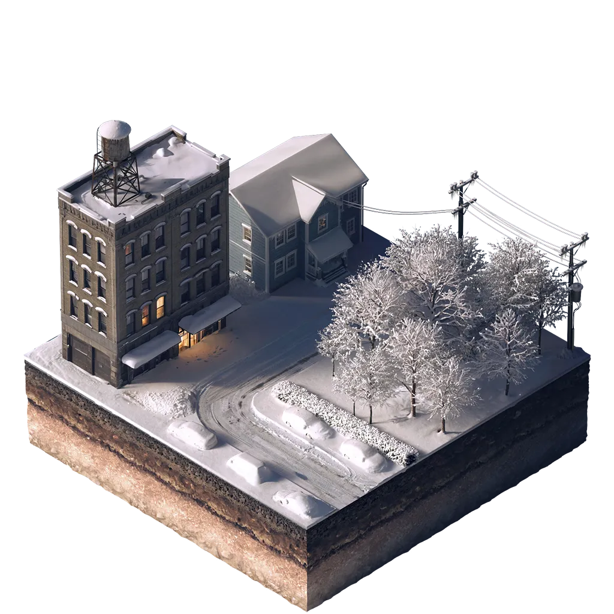
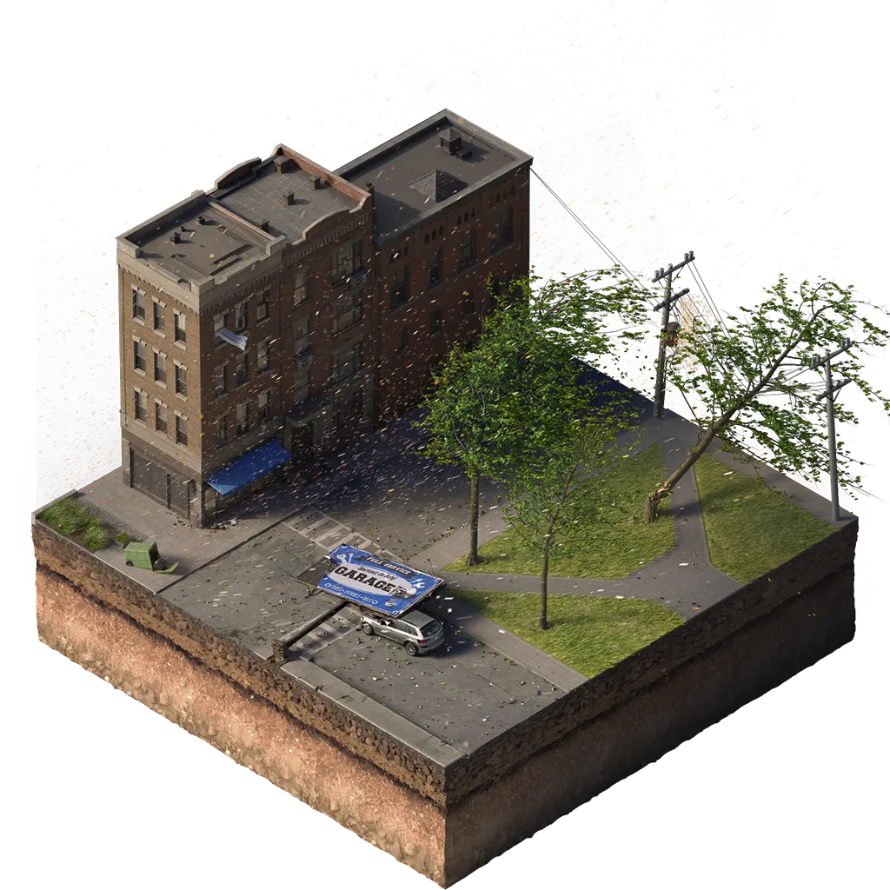

214 of 473 actions still need a county priority
Showing 6Bethel — Floodprone Roads
Develop specific mitigation solutions for flood-prone road systems after a flood study — elevation, drainage improvements, regrading, or resurfacing.
 Flooding
Flooding
County Priority
Tier 1
Top Implementation Priority
Bethel — Generators at Critical Facilities
Study required generator capacity, then purchase and install back-up generators so critical facilities maintain continuity of operations through each hazard of concern.

Extreme Cold
WindCounty Priority
Tier 2
Significant Priority
Bethel — Dam Assessment
Complete a dam assessment within the Town to determine the condition of structures (proposed in 2012).
Flooding
County Priority
Tier 3
Important but Secondary
Bethel — Floodplain Management Training
Where feasible, send staff to FEMA and NYS DEC floodplain-management trainings and encourage Certified Floodplain Manager certification through ASFPM.
Flooding
County Priority
Tier 4
Long-Term / Opportunistic
Bethel — Repetitive Loss Properties
Outreach to repetitive-loss property owners, then develop a FEMA grant application and BCA to fund acquisition, relocation, or elevation of frequently-flooded properties.
Flooding
County Priority
Not yet reported
Bethel — Private Property Tree Assessment
Provide property owners contact info for a forester to assess at-risk trees, and enforce municipal programs that prevent trees from threatening lives and power lines.
 Ice Storm
Ice Storm
County Priority
Data: AVAIL MitigateNY Actions Database · Sullivan County (FIPS 36105). Cost & priority-tier values shown are illustrative sample data.